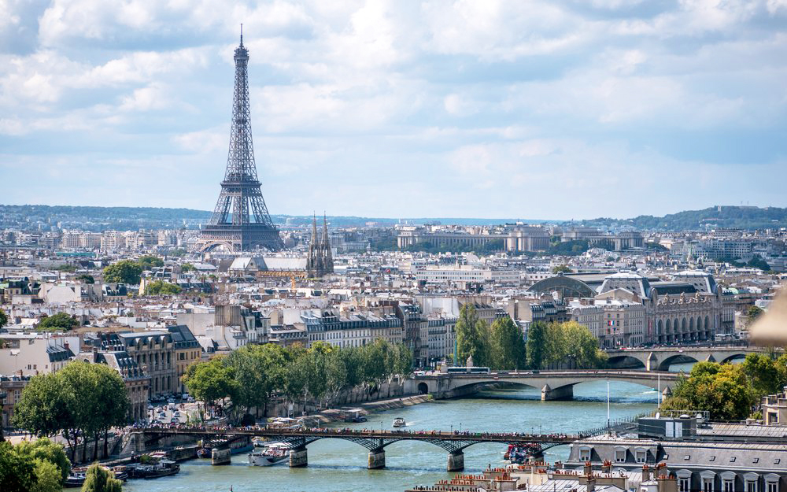
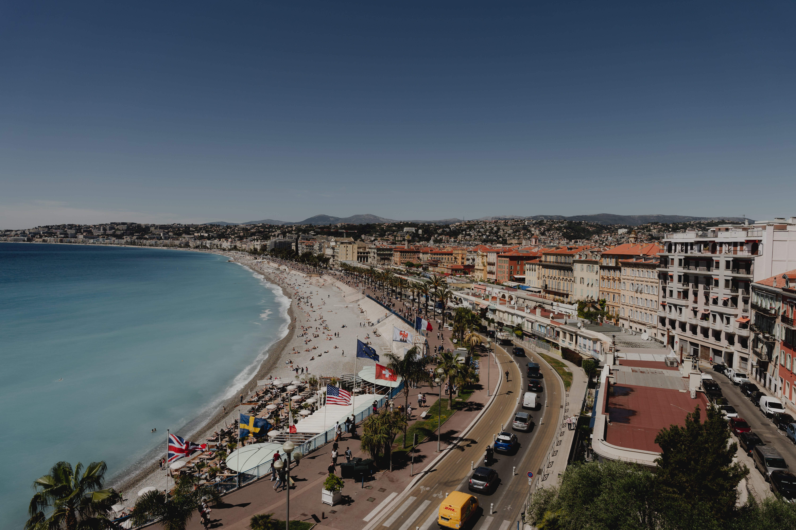

France is filled with beautiful locations and destinations for everyone. Because of the diverse landscapes, cultures, and history across the country, each location offers different activities for different interests. Below are a few places I would love to visit:
No list of French travel destinations would be complete without Paris. The city is famous for its culture and attractions, and below are a few you can’t miss.
While there are plenty more attractions across the city, these are just a few that I particularly want to visit.
This beautiful area on the Mediterranean Sea offers breathtaking views, stunning beaches, and unbeatable locations. I highly reccomend making the trip south of Paris to enjoy this region.
The Alps offer incredible mountain views. Depending on the time of year, you can ski, hike, or a mix of the two! I recommend the Alps for anyone interested in mountain sports or outdoor activities that may not be available in other areas of the country.
There are plenty of other areas around France that you should visit during your trip, but these are just a few ideas!